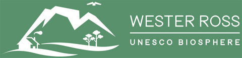

Wester Ross UNESCO Biosphere Announcement
Journal Entry
We are delighted to share a milestone announcement regarding our local environment and community partnerships within the beautiful area of Wester Ross.
As a business deeply rooted in the waters of the Highlands, our commitment to working in harmony with nature and encouraging long-term environmental sustainability underpins everything we do. This announcement marks a significant step forward for the region as a global exemplar for sustainable development.

WESTER ROSS BIOSPHERE CELEBRATES RENEWED UNESCO STATUS
— A shared vision for people, nature, and sustainable development across the Highlands —
The Wester Ross UNESCO Biosphere has officially secured its position for another decade following a comprehensive periodic review, validating the incredible collaborative efforts between local communities, sustainable businesses, and environmental conservation groups.
Biospheres are trusted testing grounds for managing changes and interactions between social and ecological systems, ensuring that economic development remains culturally and environmentally responsible.

Moving into the next chapter, the biosphere framework will continue supporting local initiatives centered on low-impact aquaculture, ecosystem restoration projects, biodiversity preservation, and mitigating local climate change impacts.
By promoting nature-based business models, the area sets a gold standard for balancing community development with the protection of pristine marine and terrestrial habitats across the European Atlantic coast.
Ends
Looking Forward
For us at the farm, this renewal strengthens our resolve to cultivate chemical-free, natural shellfish that naturally filter our waters and enrich our local biodiversity. We remain incredibly proud to operate inside a designated UNESCO Biosphere zone and are excited to play an ongoing, active role in its sustainable future.
We welcome you to share your thoughts, drop us any questions, or sign up for our newsletter to stay updated with our latest restoration logs and farm updates.